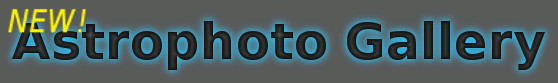
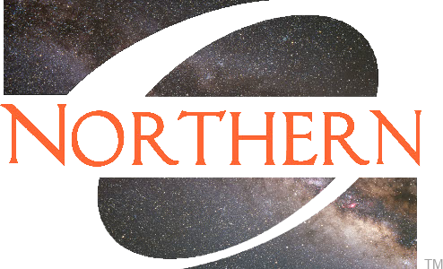

|  |
|  |
Public Events at the ONU Observatory |
Fall 2023 Schedule -- ONU Observatory
Maps to the ONU Observatory can be found
here.
Sunday, Aug 20, 8:30-9:30 pm. -- ONU Event. "Welcomefest Meet-n-greet" Descriptions of each event will appear in the week leading up to the event. Friday, Sept 8, 8:30-10:30 pm. -- Public Event. "Saturn puts on a show"
ONU and the surrounding community are invited to drop by the ONU Observatory
between 8:30-10:30 pm this Friday, September 8, for the first public
event of Fall 2023. The event is called "Saturn puts on a show" because
Saturn has just passed opposition on Sept 27. This means that it is
relatively close to the Earth and looks big and bright in telescopes.
Planets in opposition also rise right around sunset and stay
up most of the night. Saturn will be just 10 degrees above the horizon
at 8:30, when we open, but it will only get higher and better over the
next 2 hours. We will also point our telescopes at other deep sky objects.
One, the "Saturn Nebula", is only about 19 degrees away from the actual planet
Saturn on this night.
This event is cancelled due to the weather.
Friday, Sept 22, 8:30-10:30 pm. -- Public Event. "The Autumnal Equinox"
ONU and surrounding communities are invited to drop by the ONU Observatory
between 8:30 and 10:30 pm this Friday, September 22 for an autumnal equinox
star party! The autumnal equinox is the start of fall and it officially
happens on September 23 at 2:50 am Eastern this year. It is called an
"equinox" because the length of the daytime hours are about equal to the
length of the nighttime hours. This also happens to be a few days after
the opposition of Neptune, so it will be optimized for telescopic viewing.
Finally, Saturn and the 1st quarter Moon will appear truly impressive
in the eyepiece!
This event was a success!
Friday, Oct 13, 8:00-10:00 pm. -- Public Event. "Eclipse Eve Viewing"
Hardin County and surrounding communities are invited to drop by the ONU
Observatory between 8:00 and 10:00 pm this Friday, October 13 for a
"star party". Friday is the eve of the Annular Solar Eclipse (October 14).
Dr. Pinkney will hold a question and answer session about eclipses at
9:00 pm.
This whole event is contingent on the weather; we need less than 50%
cloudcover to see the skies reasonably well. As of 10/9/23, the forecast
is not looking too good for either Friday or Saturday.
This event is cancelled due to the weather (clouds and rain expected).
Saturday, Oct 14, 12:30-1:30 pm. -- STREAMED Event. "Annular Solar Eclipse"
Dr. Pinkney would like to stream live video and images the Annular
Solar Eclipse on Saturday between noon and 2 pm. The Sun will only be
about 38% obscured as seen from Ada, however, our solar telescopes will
reveal things like sunspots and prominances which cannot normally be seen
with eclipse glasses. Maximum obscuration for Ada occurs around 1:05 pm.
WARNING: IT IS UNSAFE TO STARE DIRECTLY AT AN ANNULAR ECLIPSE AT ANY TIME DURING THE EVENT. One needs protective eclipse glasses or a pinhole camera box to view the bright photosphere of the Sun. I will post below a link to the live stream on Saturday, but only if the cloudcover is expected to be less than 40%.
This event is cancelled due to the weather (clouds and rain expected).
Friday, Nov 3, 8:00-10:00 pm. -- Public Event. "Jupiter at its closest"
ONU and surrounding communities are invited to drop by the ONU Observatory
between 8:00 and 10:00 pm this Friday, November 3 for our "Jupiter at
its closest" event. The title refers to the opposition of Jupiter, which
occurs on this date. Opposition is when the planet reaches
its maximum angle away from the Sun (up to 180 degrees). This happens
a day or two after Earth's closest approach to Jupiter, thus making
Jupiter appear big and bright in telescopes around opposition and the
weeks to follow.
As of Nov 2, the forecast looks to be very cloudy on Friday night.
This event is cancelled due to the weather (clouds expected).
Friday, Nov 17, 8:00-10:00 pm. -- Public Event. "Leonid Meteor Shower"
The final public event this fall at the ONU Observatory celebrates the Taurid Meteor
Shower. Meteors are streaks of light in the sky caused by small particles
flying into the atmosphere at high speeds. Most of the particles originate in the
tails of comets. The peak of about 15 meteors per hour
is expected on the night of Nov 17-18. In previous years, there were meteor "storms"
which occurred every 33 years, including 1966 and 1999.
One sees the most meteors by just gazing at the sky without a telescope. But we will have
our telescopes pointed at targets like Jupiter, Saturn, and Uranus (which has just
passed opposition). The comet C/2023 H2 (Lemmon) may also be accessible.
The current weather forecast is not looking good for observing on Friday, with over 50% cloudcover. A final decision on cancellation will be posted here in red by 2:30 pm on Friday.
This event is cancelled due to the weather (clouds expected).
Try looking for Leonids in your own backyard on Saturday night when the forecast calls for clearer skies. Printer-friendly version here. |
Spring 2023 Schedule -- ONU ObservatoryFriday, Feb 3, 8:00-10:00 pm. -- Public Event. "Comet ZTF close to Earth" Friday, Feb 24, 8:00-10:00 pm. -- Public Event. "Explore the waxing crescent Moon" Friday, Mar 24, 8:30-10:30 pm. -- Public Event. "Spring Star Party!" Friday, Apr 7, 9:00-11:00 pm. -- Public Event. "Mercury at Greatest Elongation" Friday, Apr 21, 9:00-11:00 pm. -- Public Event. "Galaxies of Spring" Printer-friendly version here. |
Fall 2022 Schedule -- ONU ObservatorySunday, Aug 21, 8:30-9:30 pm -- ONU event. "Welcomefest Open House" Friday, Sept 16, 9:00-11:00 pm -- Public Event "Neptune at its closest" Friday, Sept 23, 8:00-10:00 pm -- Public Event. "Autumnal Equinox and Jupiter approaching opposition" Friday, Oct 21, 8:00-10:00 pm. -- Public Event. "Orionid Meteor Shower" Friday, Oct 28, 8:00-10:00 pm. - Public Event. "Observe the crescent Moon" Friday, Nov 11, 8:00-10:00 pm. -- Public Event. "Uranus at Opposition" Friday, Dec 9, 8:00-10:00 pm. -- Public Event. "Opposition of Mars" Printer-friendly version here. |
Arrange a tour or visit?We encourage your K-12 students and other organizations to visit during the Public Events listed above. However, you may be able to schedule a special visit. We can comfortably fit about 60 people in the observing room. Bigger groups can still attend. During the daytime, we will show you the building and telescopes and, if clear, can view the Sun! We don't roll back the roof if there is precipitation. If interested, contact the Observatory Manager:Dr. Jason Pinkney ONU Dept of Physics and Astronomy 525 S. Main St., Ada, OH, 45810 j-pinkney@onu.edu Office: 419-772-2740 Observatory: 419-772-4028 See maps to the ONU Observatory. Check the weather at ONU Observatory: Clear Sky Chart. See the Observatory's Astrophoto gallery. |